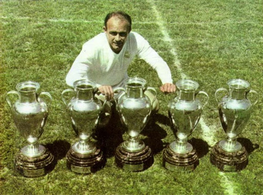

The UEFA Champions League (historically known as the European Cup and mostly abbreviated worldwide as the UCL) is an annual club association football competition organised by the Union of European Football Associations (UEFA) and contested by top-division European clubs, deciding the competition winners through a round robin group stage to qualify for a double-legged knockout format, and a single leg final. It is the most watched club competition in the world and the third-most watched football competition overall, behind only the UEFA European Championship and the FIFA World Cup. It is one of the most prestigious football tournaments in the world and the most prestigious club competition in European football, played by the national league champions (and, for some nations, one or more runners-up) of their national associations. Introduced in 1955 as the Coupe des Clubs Champions Européens (French for European Champion Clubs' Cup), and commonly known as the European Cup, it was initially a straight knockout tournament open only to the champions of Europe's domestic leagues, with its winner reckoned as the European club champion. The competition took on its current name and format in 1992, adding a round-robin group stage in 1991 and allowing multiple entrants from certain countries since the 1997–98 season.[1] It has since been expanded, and while most of Europe's national leagues can still only enter their champion, the strongest leagues now provide up to four teams.[2][3] Clubs that finish next-in-line in their national league, having not qualified for the Champions League, are eligible for the second-tier UEFA Europa League competition, and since 2021, for the third-tier UEFA Europa Conference League.[4] In its present format, the Champions League begins in late June with a preliminary round, three qualifying rounds and a play-off round, all played over two legs. The six surviving teams enter the group stage, joining 26 teams qualified in advance. The 32 teams are drawn into eight groups of four teams and play each other in a double round-robin system. The eight group winners and eight runners-up proceed to the knockout phase that culminates with the final match in late May or early June.[5] The winner of the Champions League automatically qualifies for the following year's Champions League, entering at group stage, the UEFA Super Cup, the FIFA Club World Cup and as of 2024 the new FIFA Intercontinental Cup which serves as a replacement for the previous annual format of the Club World Cup.[6][7][8] Spanish clubs have the highest number of victories (19 wins), followed by England (15 wins) and Italy (12 wins). England has the largest number of winning teams, with six clubs having won the title. The competition has been won by 23 clubs, 13 of which have won it more than once, and eight successfully defended their title.[9] Real Madrid is the most successful club in the tournament's history, having won it 14 times.[10] Manchester City are the current European champions, having beaten Inter Milan 1–0 in the 2023 final for their first title.
The first time the champions of two European leagues met was in what was nicknamed the 1895 World Championship, when English champions Sunderland beat Scottish champions Hearts 5–3.[11] The first pan-European tournament was the Challenge Cup, a competition between clubs in the Austro-Hungarian Empire.[12] Three years later, in 1900, the champions of Belgium, Netherlands and Switzerland, which were the only existing leagues in continental Europe at the time, participated in the Coupe Van der Straeten Ponthoz, thus being dubbed as the "club championship of the continent" by the local newspapers.[13][14] The Mitropa Cup, a competition modelled after the Challenge Cup, was created in 1927, an idea of Austrian Hugo Meisl, and played between Central European clubs.[15] In 1930, the Coupe des Nations (French: Nations Cup), the first attempt to create a cup for national champion clubs of Europe, was played and organised by Swiss club Servette.[16] Held in Geneva, it brought together ten champions from across the continent. The tournament was won by Újpest of Hungary.[16] Latin European nations came together to form the Latin Cup in 1949.[17] After receiving reports from his journalists over the highly successful South American Championship of Champions of 1948, Gabriel Hanot, editor of L'Équipe, began proposing the creation of a continent-wide tournament.[18] In interviews, Jacques Ferran (one of the founders of the European Champions Cup, together with Gabriel Hanot),[19] said that the South American Championship of Champions was the inspiration for the European Champions Cup.[20] After Stan Cullis declared Wolverhampton Wanderers "Champions of the World" following a successful run of friendlies in the 1950s, in particular a 3–2 friendly victory against Budapest Honvéd, Hanot finally managed to convince UEFA to put into practice such a tournament.[1] It was conceived in Paris in 1955 as the European Champion Clubs' Cup.[1]
The first European Cup took place during the 1955–56 season.[21][22] Sixteen teams participated (some by invitation): AC Milan (Italy), AGF Aarhus (Denmark), Anderlecht (Belgium), Djurgården (Sweden), Gwardia Warszawa (Poland), Hibernian (Scotland), Partizan (Yugoslavia), PSV Eindhoven (Netherlands), Rapid Wien (Austria), Real Madrid (Spain), Rot-Weiss Essen (West Germany), Saarbrücken (Saar), Servette (Switzerland), Sporting CP (Portugal), Stade de Reims (France), and Vörös Lobogó (Hungary).[21][22] The first European Cup match took place on 4 September 1955, and ended in a 3–3 draw between Sporting CP and Partizan.[21][22] The first goal in European Cup history was scored by João Baptista Martins of Sporting CP.[21][22] The inaugural final took place at the Parc des Princes between Stade de Reims and Real Madrid on 13 June 1956.[21][22][23] The Spanish squad came back from behind to win 4–3 thanks to goals from Alfredo Di Stéfano and Marquitos, as well as two goals from Héctor Rial.[21][22][23] Real Madrid successfully defended the trophy next season in their home stadium, the Santiago Bernabéu, against Fiorentina.[24][25] After a scoreless first half, Real Madrid scored twice in six minutes to defeat the Italians.[23][24][25] In 1958, Milan failed to capitalise after going ahead on the scoreline twice, only for Real Madrid to equalise.[26][27] The final, held in Heysel Stadium, went to extra time where Francisco Gento scored the game-winning goal to allow Real Madrid to retain the title for the third consecutive season.[23][26][27] In a rematch of the first final, Real Madrid faced Stade Reims at the Neckarstadion for the 1959 final, and won 2–0.[23][28][29] West German side Eintracht Frankfurt became the first team not to compete in the Latin cup to reach the European Cup final.[17][30][31] The 1960 final holds the record for the most goals scored, with Real Madrid beating Eintracht Frankfurt 7–3 in Hampden Park, courtesy of four goals by Ferenc Puskás and a hat-trick by Alfredo Di Stéfano.[23][30][31] This was Real Madrid's fifth consecutive title, a record that still stands today.[9] Real Madrid's reign ended in the 1960–61 season when bitter rivals Barcelona dethroned them in the first round.[32][33] Barcelona were defeated in the final by Portuguese side Benfica 3–2 at Wankdorf Stadium.[32][33][34] Reinforced by Eusébio, Benfica defeated Real Madrid 5–3 at the Olympic Stadium in Amsterdam and kept the title for a second consecutive season.[34][35][36] Benfica wanted to repeat Real Madrid's successful run of the 1950s after reaching the showpiece event of the 1962–63 European Cup, but a brace from Brazilian-Italian José Altafini at the Wembley Stadium gave the spoils to Milan, making the trophy leave the Iberian Peninsula for the first time ever.[37][38][39] Inter Milan beat an ageing Real Madrid 3–1 in the Ernst-Happel-Stadion to win the 1963–64 season and replicate their local-rival's success.[40][41][42] The title stayed in Milan for the third year in a row after Inter beat Benfica 1–0 at their home ground, the San Siro.[43][44][45] Under the leadership of Jock Stein, Scottish club Celtic beat Inter Milan 2–1 in the 1967 final to become the first British club to win the European Cup.[46][47] The Celtic players that day, all of whom were born within 30 miles (48 km) of Glasgow, subsequently became known as the "Lisbon Lions".[48]
The 1967–68 season saw Manchester United become the first English team to win the European Cup, beating two-times winners Benfica 4–1 in the final.[49] This final came 10 years after the Munich air disaster, which had claimed the lives of eight United players and left their manager, Matt Busby, fighting for his life.[50] In the 1968–69 season, Ajax became the first Dutch team to reach the European Cup final, but they were beaten 4–1 by Milan, who claimed their second European Cup, with Pierino Prati scoring a hat-trick.[51] The 1969–70 season saw the first Dutch winners of the competition. Feyenoord knocked out the defending champions, Milan in the second round,[52] before beating Celtic in the final.[53] In the 1970–71 season Ajax won the title, beating Greek side Panathinaikos in the final.[54] the season saw a number of changes, with penalty shoot-outs being introduced, and the away goals rule being changed so that it would be used in all rounds except the final.[55] It was also the first time a Greek team reached the final, as well as the first season that Real Madrid failed to qualify, having finished sixth in La Liga the previous season.[56] Ajax went on to win the competition three years in row (1971 to 1973), which Bayern Munich emulated from 1974 to 1976, before Liverpool won their first two titles in 1977 and 1978.[57] The following seasons saw victories in 1978–79 and 1979–80 for Brian Clough's Nottingham Forest. The following year Liverpool won their third title before Aston Villa continued the sense of English dominance in 1982.
In 1982–83 Hamburger SV broke the English dominance. Liverpool regained it in 1983–84 before losing to Juventus (1984–85); Steaua București (1985–86); Porto (1986–87); PSV Eindhoven (1987–88); Milan (2); Red Star Belgrade; and Barcelona became champions before the competition was re-formulated as the UEFA Champions League. All English clubs were banned for five years (Liverpool for six years) following the 1985 European Cup final due to the Heysel Stadium disaster.
The UEFA Champions League anthem, officially titled simply as "Champions League", was written by Tony Britten, and is an adaptation of George Frideric Handel's 1727 anthem Zadok the Priest (one of his Coronation Anthems).[59][60] UEFA commissioned Britten in 1992 to arrange an anthem, and the piece was performed by London's Royal Philharmonic Orchestra and sung by the Academy of St. Martin in the Fields.[59] Stating that "the anthem is now almost as iconic as the trophy", UEFA's official website adds it is "known to set the hearts of many of the world's top footballers aflutter".[59] The chorus contains the three official languages used by UEFA: English, German, and French.[61] The climactic moment is set to the exclamations 'Die Meister! Die Besten! Les Grandes Équipes! The Champions!'.[62] The anthem's chorus is played before each UEFA Champions League game as the two teams are lined up, as well as at the beginning and end of television broadcasts of the matches. In addition to the anthem, there is also entrance music, which contains parts of the anthem itself, which is played as teams enter the field.[63] The complete anthem is about three minutes long, and has two short verses and the chorus.[61] Special vocal versions have been performed live at the Champions League final with lyrics in other languages, changing over to the host nation's language for the chorus. These versions were performed by Andrea Bocelli (Italian; Rome 2009, Milan 2016 and Cardiff 2017), Juan Diego Flores (Spanish; Madrid 2010), All Angels (Wembley 2011), Jonas Kaufmann and David Garrett (Munich 2012), and Mariza (Lisbon 2014). In the 2013 final at Wembley Stadium, the chorus was played twice. In the 2018 and 2019 finals, held in Kyiv and Madrid respectively, the instrumental version of the chorus was played, by 2Cellos (2018) and Asturia Girls (2019).[64][65] In the 2023 final, held in Istanbul, Hungarian pianist Ádám György performed the piano version of the anthem.[66] The anthem has been released commercially in its original version on iTunes and Spotify with the title of Champions League Theme. In 2018, composer Hans Zimmer remixed the anthem with rapper Vince Staples for EA Sports' video game FIFA 19, with it also featuring in the game's reveal trailer.[67]
In 1991, UEFA asked its commercial partner, Television Event and Media Marketing (TEAM), to help brand the Champions League. This resulted in the anthem, "house colours" of black and white or silver and a logo, and the "starball". The starball was created by Design Bridge, a London-based firm selected by TEAM after a competition.[68] TEAM gives particular attention to detail in how the colours and starball are depicted at matches. According to TEAM, "Irrespective of whether you are a spectator in Moscow or Milan, you will always see the same stadium dressing materials, the same opening ceremony featuring the 'starball' centre circle ceremony, and hear the same UEFA Champions League Anthem". Based on research it conducted, TEAM concluded that by 1999, "the starball logo had achieved a recognition rate of 94 percent among fans".